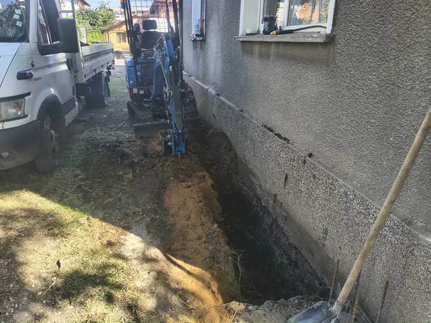
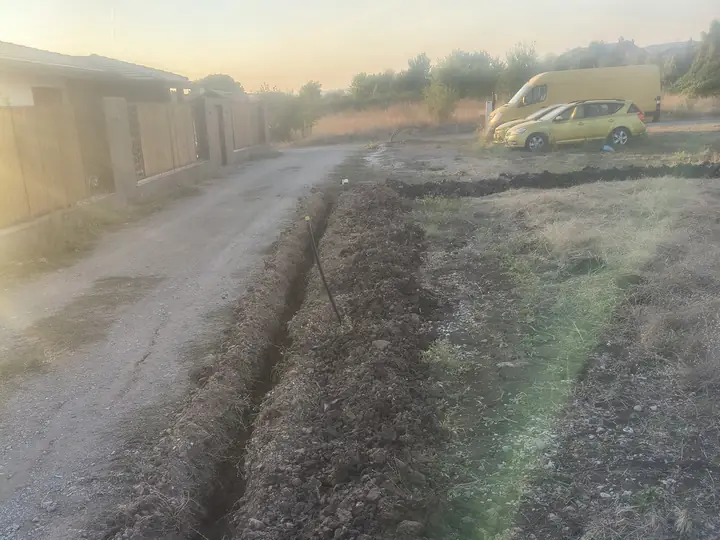

Минибагер или ръчен труд — кога си струва машината?
Честно сравнение за дворни изкопи около Костинброд: време, цена, щети по морава и кога лопатата все още е достатъчна.

Въпросът не е „машина или човек“, а колко метра, каква почва и колко ви пука за двора. По-долу — ориентири от реални поръчки в региона, не общи реклами.
| Ситуация | Ръчен труд | Минибагер |
|---|---|---|
| Къс канал 3–8 м, мека почва | Често по-евтино и по-гъвкаво | Има смисъл само ако идвате за още работа същия ден |
| Ивица за ограда 15–40+ м | 2–4 дни, гърбът ви казва „достатъчно“ | Часове в една смяна; права линия |
| ВиК / дренаж до фасада | Бавно и неравномерно в твърда почва | Тесен изкоп, по-малко извадена пръст |
| Подравняване на двор | Гребло + дни | Планировъчна кофа 80 см — по-бързо и по-равно |
| Корени / бетонни отломки | Рисковано и бавно | Палец + кофа — захват и товарене |
Къде ръчният труд печели
- Малък обем — няколко метра канал или една яма в мека почва.
- Няма достъп — порта под ~1 м или стълби без място за вериги.
- Точна работа около кабели — където искате само лопата до открит кабел.
- Бюджет „днес или никога“ — ако обектът е малък, машиносмяната може да е прекалена.
Къде минибагерът печели
- Дължина — ограда, поливна линия, дренаж по цялата фасада.
- Твърда / глинеста почва — лопатата губи часове; кофата реже по-равномерно.
- Готов двор — тесната кофа вади по-малко пръст; гумените вериги щадят паваж и морава по-добре от тежък багер.
- Комбинация — изкоп + свредел за колове или палец за корени в една визита.

Цена: как да мислите (не само €/час)
Ръчният труд изглежда евтин на час, но сметката често е човекодни + болки + разкопан двор + повторно подравняване.
При нас ориентирът е: изкоп / планиране 200–230 € / смяна; минимум 90 € (3 часа). Доставка отделно (1 €/км, мин. 20 €). Пълна таблица: цени.
Практическо правило: ако очаквате над един пълен ден с лопата (или двама души за два дни), поискайте оферта за минибагер — често излиза по-ясно и по-чисто.
Риск за двора
Клиентите често питат точно това. Реалистично:
- Минибагерът не е невидим — има следи от вериги и купчина пръст.
- Затова ползваме тясна кофа и работим по линията — не „отваряме“ целия двор. Вижте и гида коя кофа за какъв изкоп.
- Извозването на пръст е за клиента (контейнер/камион) — ние товарим с кофата и палеца при нужда.
Типични сценарии
Изкоп за ограда
Ивична основа 20–40 м в твърда почва с лопата е мъчение. С минибагер + кофа 40 см и свредел за коловете работата се събира в една логична визита.
ВиК и дренаж до къща
Канал плътно до основата иска контрол. Компактната машина държи ширината; ръчно често се разширява „за удобство“ и после засипвате повече.
Поливна система
Дълги тесни линии в морава — кофа 20/30 см. Ръчно е възможно, но бавно при дължина над десетина метра. Повече: изкопи за поливна система.
Кратък вердикт
- Малко и меко → лопата.
- Дълго, твърдо или до фасада → минибагер.
- Не сте сигурни → пратете снимка и метри във Viber; казваме честно ако не си струва машината.
Често задавани въпроси
За колко метра ограда вече си струва минибагер?
Ориентир: над ~15–20 м ивична основа или твърда почва — машината обикновено излиза по-добре от няколко дни ръчен труд.
Ще развали ли моравата и паважа?
Има следи — нормално е. Гумените вериги и тясната кофа намаляват щетите спрямо тежък багер. Работим по линията, не по целия двор.
Кога да остана с лопата?
Къс канал, мека почва, или място без достъп за машина ~1 м ширина. Тогава ръчният труд е по-разумният избор.
Пратете снимка, населено място и приблизителни метри — казваме дали си струва машината.
Още гидове: коя кофа за какъв изкоп.